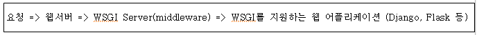

Flask 웹서버

Flask란 Python으로 작성된 마이크로 웹 프레임워크의 한 종류로 Werkzeng 툴킷과 jinja2 템플릿 엔진에 기반을 두고 있으며 특별한 도구 또는 라이브러리가 필요 없어 마이크로 프레임워크라고 부릅니다. 서버의 관점에서 볼 때는 애플리케이션처럼 행동하며, 애플리케이션의 관점에서는 서버처럼 행동합니다.
Flask는 기본적인 구조가 명확해 단 몇 줄의 코드만으로도 웹 어플리케이션을 만들 수 있는 간결한을 추구하는 장점과 이용자가 필요한 부분을 추가하여 자신만의 프레임워크를 만들 수 있어 자유도가 높다는 장점이 있습니다.
동작과정
Flask에서 환경변수가 바뀌면 타겟 URL에 따라서 리퀘스트의 경로를 지정, 같은 프로세스에서 여러 애플리케이션과 프레임워크가 실행되게 하며, XSLT 스타일시트를 적용하는 것과 같이 전처리를 한다.